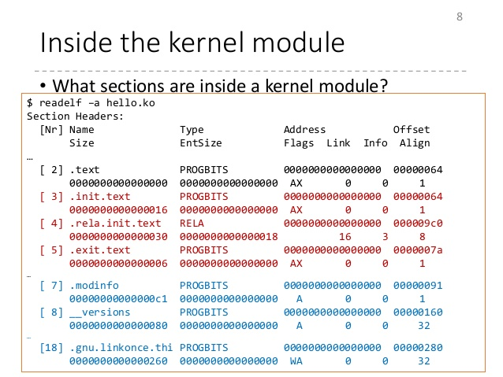

Hi everyone!
In this post I’m going to introduce you to the world of linux kernel module development. I am a newcomer in this field myself but I decided to document everything in this blog as I gradually learn them.
To start you need some sort of virtual machine. Of course you can test kernel modules on your own system but it is very risky and you can’t really debug them effectively and must use printk and debug messages to find problems in your code.
The first option is to use VirtualBox and install a linux distro in it. This way your system won’t crash and you will be safe regarding any data loss. But debugging is still not very trivial.
Second option would be using QEMU and buildroot, you can easily step-debug linux kernel code or your own code. This is the recommended method.
I have found a really nice linux+buildroot setup here. Plus some really nice tricks in linux kernel programming as the name also suggests.
Using cirosantilli buildroot
Just follow his guide on GitHub. What lies here is only some glitches I ran into while setting up the buildroot.
- Clone the whole repository. You are better off this way.
1
git clone --recurse-submodules -j16 "https://github.com/cirosantilli/linux-kernel-module-cheat"
- Pay attention to dependencies. strangely the configure script does not check for all of them. pay attention to error messages if you encounter any and find the appropriate package to install for your distro. (most likely you will need development version of the package too)
If you are using the buildroot mentioned then there is no need for this step. This is the minimal setup to get you started with kernel module development.
Install dependencies for compiling kernel module (if you are on Ubuntu run this):
1
apt-get install build-essential linux-headers-$(uname -r)
Your first module
Create a directory and put this piece of code into a file (like ko_example.c):
1
2
3
4
5
6
7
8
9
10
11
12
13
14
15
16
17
18
19
20
#include <linux/init.h>
#include <linux/module.h>
#include <linux/kernel.h>
MODULE_LICENSE("GPL");
MODULE_AUTHOR("Shahriar EV");
MODULE_DESCRIPTION("sample linux kernel module.");
MODULE_VERSION("1.00");
static int __init mylkm_init(void) {
printk(KERN_INFO "HI!\n");
return 0;
}
static void __exit mylkm_exit(void) {
printk(KERN_INFO "BYE!\n");
}
module_init(mylkm_init);
module_exit(mylkm_exit);
- The includes at the top are pretty obvious. they are required for linux kernel programming and provide us with all the functions we are using here.
- The next block is module specs. self explanatory…
- mylkm_init is the function which is called when module is loaded.
- mylkm_exit is the function which is called when module is unloaded.
- printk is used to print stuff from kernel which then can be read via dmesg.
- KERN_INFO is severity level of the log message which comes after that.
That is enough code for now, however we need a Makefile to compile the kernel module.
Save this in a file name Makefile in the same directory as the source code:
1
2
3
4
5
6
7
obj-m += lkm_example.o
all:
make -C /lib/modules/$(shell uname -r)/build M=$(PWD) modules
clean:
make -C /lib/modules/$(shell uname -r)/build M=$(PWD) clean
Now run make and it should build successfully. To load it run (as root):
1
insmod ko_example.ko
If everything is okay, you can see “Hello World” in dmesg buffer:
1
dmesg
The module should now be visible on lsmod output.
On unloading of the kernel module, printk is called again:
1
rmmod ko_example.ko
It is very important to know that LKM developement is different from userland applications. I like to quote directly from derekmolloy.ie :
A kernel module is not an application!
do not execute sequentially— a kernel module registers itself to handle requests using its initialization function, which runs and then terminates. The type of requests that it can handle are defined within the module code. This is quite similar to the event-driven programming model that is commonly utilized in graphical-user interface (GUI) applications.
do not have automatic cleanup — any resources that are allocated to the module must be manually released when the module is unloaded, or they may be unavailable until a system reboots.
do not have
printf()functions — kernel code cannot access libraries of code that is written for the Linux user space. The kernel module lives and runs in kernel space, which has its own memory address space. The interface between kernel space and user space is clearly defined and controlled. We do however have aprintk()function that can output information, which can be viewed from within user space.can be interrupted — one conceptually difficult aspect of kernel modules is that they can be used by several different programs/processes at the same time. We have to carefully construct our modules so that they have a consistent and valid behavior when they are interrupted. we have to consider the impact of multiple processes accessing the module simultaneously.
have a higher level of execution privilege — typically, more CPU cycles are allocated to kernel modules than to user-space programs. This sounds like an advantage, however, you have to be very careful that your module does not adversely affect the overall performance of your system.
do not have floating-point support — it is kernel code that uses traps to transition from integer to floating-point mode for your user space applications. However, it is very difficult to perform these traps in kernel space. The alternative is to manually save and restore floating point operations — a task that is best avoided and left to your user-space code.
http://derekmolloy.ie/writing-a-linux-kernel-module-part-1-introduction/
I think that would suffice for the first try! Further topics could be actually doing some practical tasks for a kernel module; like showing some data to userland or providing some device for other programs to use.
References
- https://blog.sourcerer.io/writing-a-simple-linux-kernel-module-d9dc3762c234
- https://github.com/cirosantilli/linux-kernel-module-cheat
- http://derekmolloy.ie/writing-a-linux-kernel-module-part-1-introduction/
- https://stackoverflow.com/questions/39652385/kernel-modules-how-can-i-modify-printk-severity-based-on-a-passed-parameter
Comments powered by Disqus.